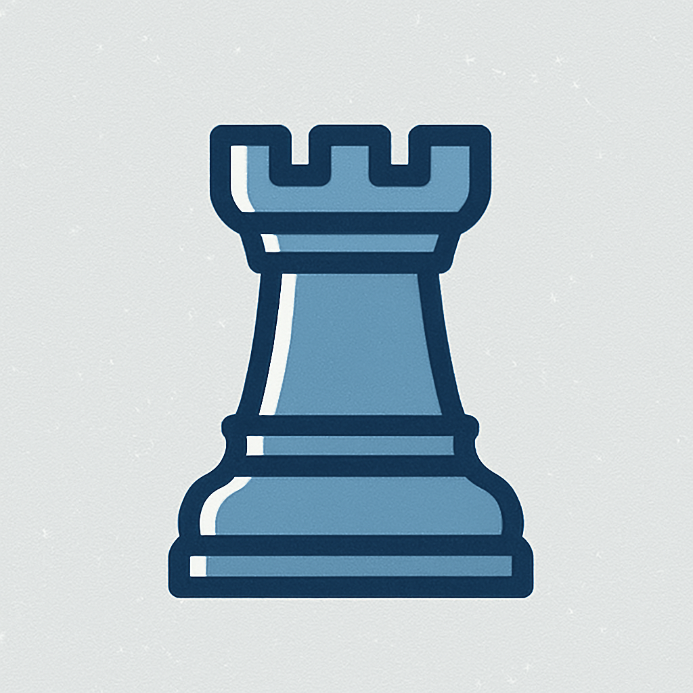
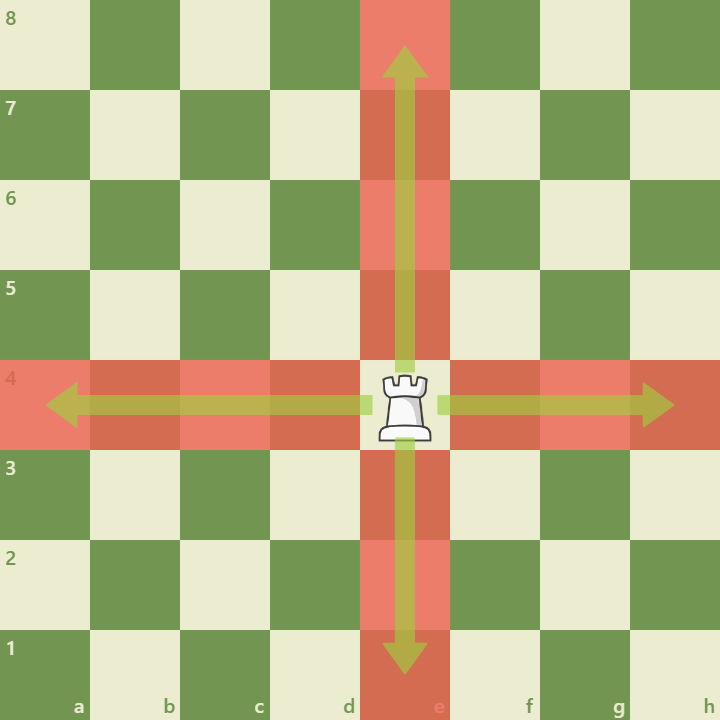
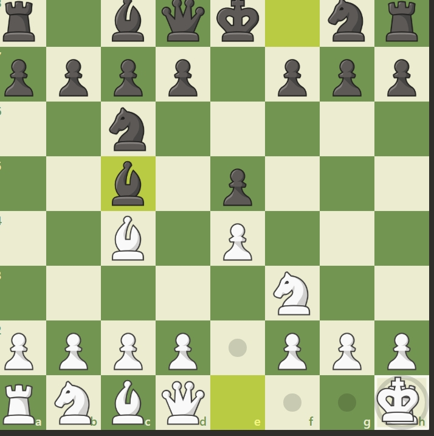

The rook moves any number of squares along a rank or file and is strongest on open files and in the endgame.

Key Characteristics:

Movement Straight along files and ranks, unlimited range until blocked.

Castling Rooks participate in castling with the king to improve king safety and rook activity.
Strategic Importance:
Open Files Rooks dominate open files and penetrate 7th rank.
Endgames Very powerful in king-and-pawn endgames.
Coordination Pairs of rooks work well together on ranks and files.
Rooks are major pieces that often decide the outcome when they become active and connected.